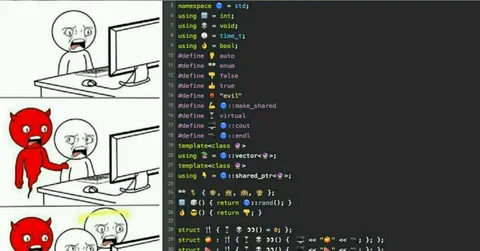

А теперь серьезно. Полагаю, никто не станет спорить, что C++ - лучший язык программирования?
Как в свое время у меня не возникло вопроса, кем работать (как-то само собой получилось), так и выбор языка передо мной никогда не стоял. Как только мы в четвертом семестре изучили плюсы, я решил, что пора идти работать по специальности, и начал искать плюсовые вакансии. Ну не на паскале или ассемблере же писать. Нет, я знал о существовании джавы и, возможно, даже питона. Но это не выглядело сколько-нибудь серьезно. С++ - это да, это Язык. На нем же что угодно можно написать (хоть веб-сервер, хоть игру, хоть числодробилку), к тому же очень эффективно.
За последующие полтора десятка лет мне довелось покодить на 7-8 других языках, но я всегда возвращался к истокам и остался верен С++. Джава - многословная прелюдия к проблемам с гарбадж-коллектором. Питон - однопоточное уныние. Голанг - для лентяев со смузи. Раст - для альтернативно одаренных. Баш - скриптоложество. JS/Котлин/свифт/обж-си - не универсально. Прочую эзотерику типа лиспа и хаскеля даже не обсуждаем.
Возможность отстрелить себе ноги по самые тазовые кости - это то, чего ни в коем случае нельзя забирать у программиста. Потому что только через страдание он может научиться думать, прежде чем релизить. Научиться дебажить корки методом пристального взгляда, чтобы познать дзен. Только плюсарь получает ведро эндорфинов, когда его шаблонная магия скомпилилась и работает.
Кстати, мой коллега из соседней команды, Ваня, ведет максимально труъшный канал про С++. Я-то давно не брал в руки шашку, а Ваня, как истинный Хранитель, практикует мрачный кодинг на плюсах и авторитетно пишет про них. Братский рекомендасьон - https://t.me/thisnotes
И мне нестерпимо больно, что сейчас все меньше молодых разработчиков готовы пройти этот тернистый путь, чтобы стать теми самыми Хранителями. Да, нанимать разработчиков на С++ нынче прямо-таки сложно. Кстати, если у вас есть знакомые плюсари в поисках вызовов - дайте знать через предложку (в свежих версиях телеги есть функция "написать автору", если не видите такой - пишите в личку @jkennedy), пожалуйста. Будем вместе ворчать тут.
